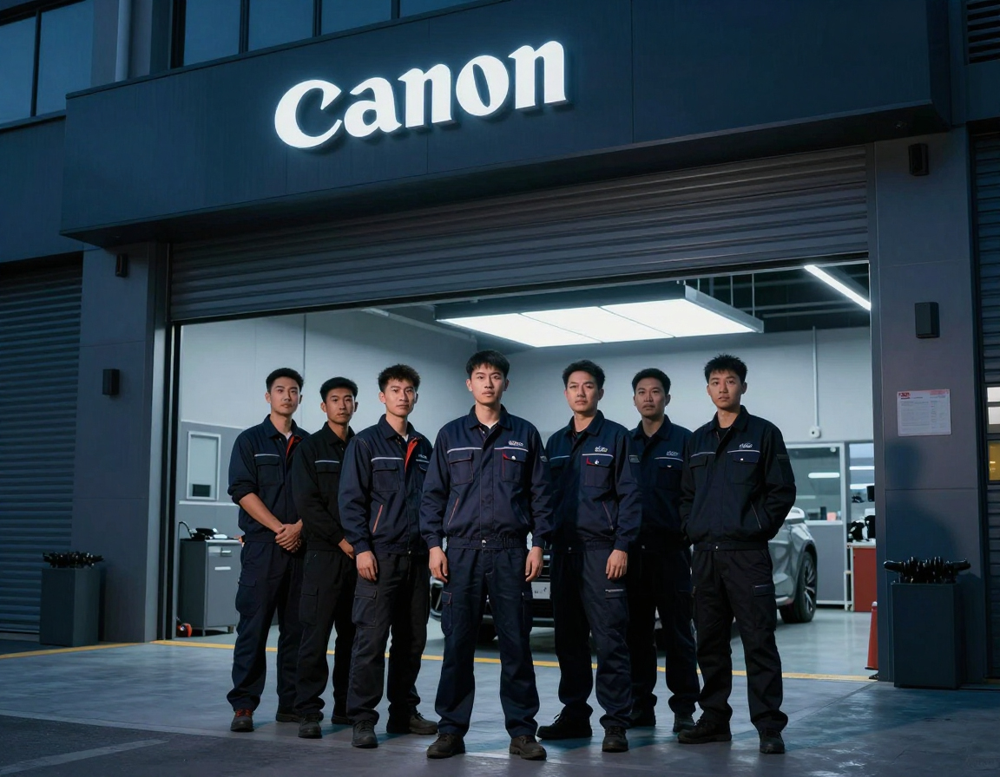
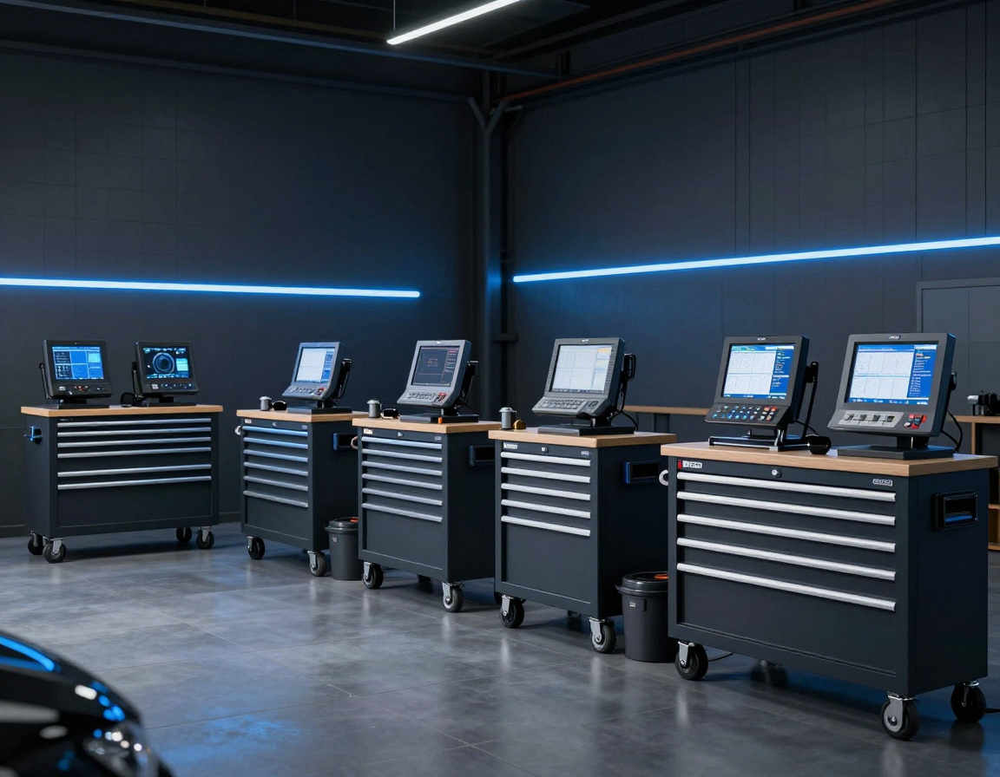

Наш автосервис выполняет ремонт и обслуживание автомобилей различных марок. Специалисты проводят ремонт двигателя, подвески, тормозной системы, рулевого управления и других узлов.
Мы выполняем как плановое техническое обслуживание, так и сложный ремонт с использованием современного оборудования. Перед началом работ проводится диагностика, которая позволяет точно определить причину неисправности.
Отдельным направлением является ремонт американских авто — Buick, Cadillac, Chevrolet, Ford, GMC, Jeep и других брендов.
Наши принципы
- Честная диагностика — показываем реальную причину, без навязанных работ
- Прозрачные цены — согласовываем стоимость до начала ремонта
- Гарантия — на выполненные работы и установленные детали
- Свой магазин — подбор и установка запчастей в одном месте
- Охраняемая территория — автомобиль на закрытой парковке на время ремонта
Как проходит ремонт
Диагностика
Проверка и выявление причины неисправности
Согласование
Стоимость и перечень работ до старта
Ремонт
Выполнение работ, замена деталей
Проверка
Контроль перед передачей автомобиля

Частые вопросы
Выполняете ли вы кузовной ремонт?
Нет. Мы специализируемся на диагностике, ремонте и ТО. Кузовные работы не выполняем.
Нужно ли записываться заранее?
Рекомендуем записаться, чтобы выбрать удобное время и избежать ожидания.
Можно ли приехать со своими запчастями?
Да. Также можем подобрать и установить детали через сервис или интернет-магазин.
Даёте ли вы гарантию?
Да, предоставляем гарантию на работы и установленные запчасти.